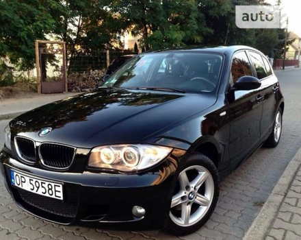

ТЕХНИЧЕСКИЕ ХАРАКТЕРИСТИКИ БМВ М 4.4 AT (560 Л.С.)
Количество мест - 4
Количество цилиндров - 8
Объем двигателя - 4.4 л.
Рекомендуемое топливо - АИ-95
Максимальная мощность - 560 л.с. при 680/5750 об/мин
Длина - 4898 мм
Клиренс - 107 мм
Высота - 107 мм
Объем багажника - 460 л
Объем топливного бака - 80 л
Полная масса - 2350 кг
Снаряженная масса - 1850 кг
Тип передней подвески - Несколько рычагов и тяг
Тип задней подвески - Несколько рычагов и тяг
Передние тормоза - Дисковые вентилируемые
Задние тормоза - Дисковые вентилируемые
Тип трансмиссии - Автомат
Количество передач - 7
Максимальная скорость - 250 км/год
Разгон до 100 км/ч - 4.2 с.
Расходы на топливо, л город / трасса / смешанный - 14 / 7.6 / 9.9